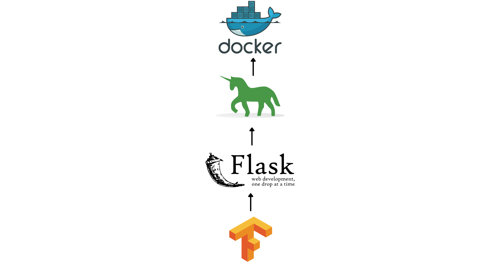
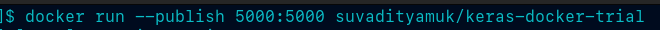
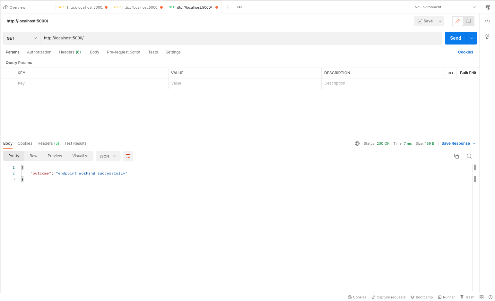
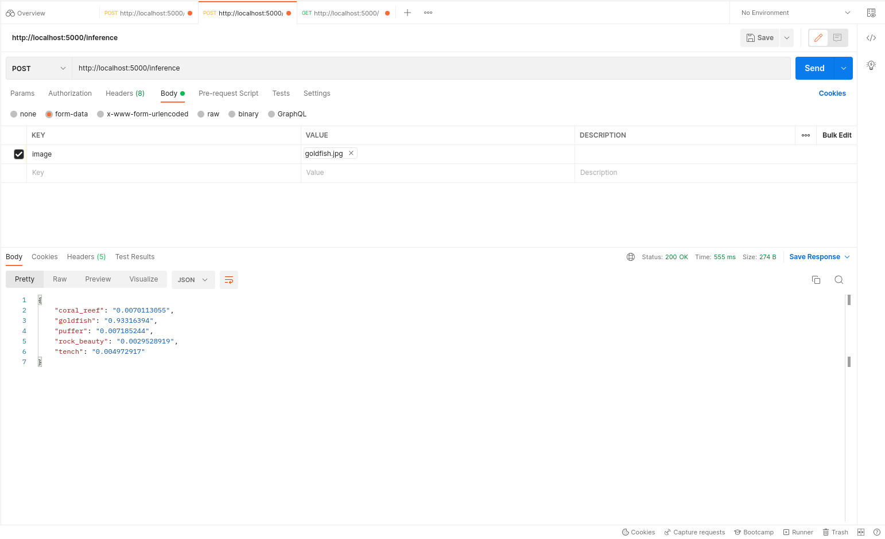

import tensorflow as tf
from tensorflow import keras
from flask import Flask
from flask import request, jsonify
from PIL import Image
import osIntroduction
An end-to-end Machine Learning solution is an important way to bring AI to production and make it available for mass consumption and usage. But today, most AI practitioners simply do the pre-processing, training, evaluation and tuning stages and leave the remaining part to DevOps engineers.
As such, a new field of development named MLOps has come into the mainstream. The focus has shifted from simply training and evaluation to also bringing and integrating it to production pipelines.
On an individual level as well, knowing how to bring your model to the public is an important tool to have in an AI practitioner’s skill-set.
In this article, we will be exploring how we can perform a small segment of the MLOps cycle in a simple and efficient manner using Keras, Flask, Gunicorn and Docker.
If you wish to skip through and go straight to the code, click here to go to the GitHub repository

What is covered in this tutorial?
- Create a custom model using
Kerasand its off-the-shelf components
- Prepare an inference pipeline
- Develop a simple
Flaskapp to expose the model for inference
- Define a
DockerfileusingGunicorn
- Build our image
- Define a simple Github Actions workflow to build your image every time you push it to your repository
1) Create a custom model using Keras
As an example, we are going to create a simple model using the Keras Functional API and an off-the-shelf MobileNetV2 model from keras.applications pretrained on ImageNet.
Import headers
We require tensorflow, keras, Flask, PIL and os for this tutorial. If using a virtual environment, you can use the requirements.txt file below to get your env prepared.
tensorflow: Used for matrix operations and back-end for keraskeras: Used for high-level Deep Learning model-building API and get pre-trained modelFlask: Used for building simple API for inferencePIL: Used for handling imagesos: Used for setting environment variables
Set options
Since GPUs are a difficult resource to get a hold of, we set a Tensorflow flag to make any CUDA devices present invisible in the first place. If you can run your container on a GPU, feel free to skip this line.
# To force inference using CPU only
os.environ['CUDA_VISIBLE_DEVICES'] = '-1'Model definition
This model is made using the Keras Functional API. We take a simple keras.Input which accepts color (RGB) images of any size.
The input is passed via the following layers:
- keras.layers.Resizing : Used to resize the image tensor to a 224x224x3 tensor - keras.layers.Rescaling : Used to rescale the image tensor values from a [0,255] range to a [0,1] range - keras.applications.MobileNetV2 : Used to import the MobileNetV2 instance from Keras (pretrained on ImageNet)
image_input = keras.Input(shape=(None,None,3))
x = keras.layers.Resizing(height=224, width=224, interpolation='lanczos3', crop_to_aspect_ratio=False)(image_input)
x = keras.layers.Rescaling(scale=1./255, offset=0.0)(x)
mobilenet = keras.applications.MobileNetV2(
alpha=1.0,
include_top=True,
weights="imagenet",
input_tensor=image_input,
classes=1000,
classifier_activation="softmax"
)
model_output = mobilenet(x)
model = keras.Model(inputs=image_input, outputs=model_output)Requirements file
Gunicorn is used to deploy the API on several workers together to allow lower latency at the expense of increased compute consumption. Gunicorn is used since it implements WSGI. In a production environment, a front-facing server like NGINX or Apache Web Server is used to host Static web pages and load balancers with Gunicorn running behind this layer to enable functionality.
Flask==2.0.3
Pillow==9.2.0
tensorflow==2.9.1
gunicorn==20.1.02) Prepare an inference pipeline
We define a simple function which accepts a tf.Tensor and runs it through the model to return a final top-5 predictions dictionary result.
Inference function
The image, accepted as a tf.Tensor, is inferred using the function prepared before. The numpy value of the tensor is then extracted to get all the confidence scores for each class.
This numpy array is then passed into keras.applications.imagenet_utils.decode_predictions to get the top 5 predictions.
def inference(image: tf.Tensor):
y = model(image).numpy()
preds = keras.applications.imagenet_utils.decode_predictions(y, top=5)
result = {i[1] : str(i[2]) for i in preds[0]}
result = {k: v for k, v in sorted(result.items(), key=lambda item: item[1])}
return result3) Make a simple Flask App to expose model for inference
Now, we define 2 simple endpoints at the routes / and /inference.
- / (GET) : The first endpoint acts as a health-check to make sure that the API is up and running
- /inference (POST) : The second endpoint accepts an image as a form field with the parameter name image and returns a dictionary with the confidence scores and the ImageNet class names
Flask App definition
app is the name of the WSGI callable that will be used by Gunicorn later on. To know more about what WSGI is, check the Interesting Links section below.
app = Flask(__name__) Definition of health-check endpoint
To test whether the API is up and running, we simply hit a GET request on this endpoint to get the expected output.
@app.route("/", methods=['GET'])
def health_check():
result = {
'outcome':'endpoint working successfully'
}
return jsonify(result)Definition of inference endpoint
Here, we accept a POST request, extract the image parameter from the files sent in the request. This is stored in a file-stream format which is then passed into a PIL.Image.open to prepare the image. Finally, we perform some simple pre-processing to convert the PIL image to a tf.Tensor and prepare a batch of 1 image to be passed into our inference function. The result returned is then passed into jsonify for response preparation and execution
@app.route("/inference", methods=['POST'])
def perform_inference():
image = request.files['image']
pil_img = Image.open(image.stream)
tensor = keras.preprocessing.image.img_to_array(pil_img)
tensor = tf.expand_dims(tensor, axis=0)
result = inference(tensor)
return jsonify(result) 4) Define a Dockerfile which uses Gunicorn for deployment
We are now done with defining our model and preparing it for inference using a simple Flask App. Here, we begin writing a Dockerfile and a .dockerignore to build a custom Docker Image
FROM ubuntu:20.04
RUN apt-get update && apt-get install -y \
git \
curl \
ca-certificates \
python3 \
python3-pip \
sudo \
&& rm -rf /var/lib/apt/lists/*
RUN useradd -m docker_runner
RUN chown -R docker_runner:docker_runner /home/docker_runner
COPY --chown=docker_runner *.* /home/docker_runner/flask_app/keras-docker-trial/
USER docker_runner
WORKDIR /home/docker_runner/flask_app/keras-docker-trial
ENV PATH="${PATH}:/home/docker_runner/.local/bin"
RUN pip install --no-cache-dir -r requirements.txt
ENTRYPOINT ["gunicorn", "--bind", "0.0.0.0:5000", "--workers=4", "app:app"]
EXPOSE 5000Dockerfile
- The first line pulls the
ubuntu:20.04image from Docker Hub to prepare a container with stock Ubuntu 20.04 Focal Fossa within it.
- The first
RUNcommand downloads and installs several essential packages that we require later ahead. - The next
RUNcommand adds a user named docker_runner and creates a home directory for the user (using the -m option) - The next
RUNcommand changes directory ownership and assigns docker_runner as the owner of its own home directory in a recursive manner for all files and subdirectories as well (using the -R option) - The
COPYcommand moves all the files present in the current repository where the Dockerfile is into the container’s target directory - The
USERcommand is used to change the current active user todocker_runner - The
WORKDIRcommand is used to change the current active directory to/home/docker_runner/flask_app/keras-docker-trial - The
ENVcommand is used to set the PATH environment variable and add our user’s/.local/bindirectory to it - The
RUNcommand is now used to install all the requirements and not use any cached directories or their SHA hashes while doing so - The
ENTRYPOINTcommand is used to begin the API deployment usinggunicorn. We bind the localhost’s port 5000 and start up 4 workers for this task. We specify the WSGI callable asappon the left side ofapp:app. If you changed the name of the Flask app in Step 3, then you should change this part as{your_app_name}:app - The
EXPOSEcommand is used to make the container listen on port 5000
.dockerignore
We just ignore the __pycache__/ directory as it generates intermediate files from CPython
__pycache__/5) Build our image
We now build our image and assign it a tag keras-docker-trial.
docker build . -t keras-docker-trial --file Dockerfile6) Define a simple GitHub Actions workflow to build your image every time you push it to your repository
Here, as an extra step, we use GitHub Actions to build our image as a test every time a Push is made to any branch or if a PR is merged in the repository. This needs to be added only if you are preparing a repository on GitHub for your model.
name: Assigns a name to the workflowon: Defines the triggers for when the workflow is to be usedenv: Sets environment variablesjobs: Defines the different commands and workflow actions to be run as part of the current workflowruns-on: Defines which GitHub-hosted runner is used for execution of workflowactions/checkout@v3: Used to check-out the code from repositoryBuild Docker Image: Build image from Dockerfile present in repository
name: Docker CI
on:
push:
pull_request:
types: ['opened', 'reopened']
env:
BUILD_CONFIGURATION: Release
jobs:
job1:
runs-on: ubuntu-latest
steps:
- name: Check-out the pushed code
uses: actions/checkout@v3
- name: Build Docker image
run: docker build . -t keras-docker-trial --file DockerfileTest the pipeline
Above, we have defined the model and deployed it using Docker and Gunicorn. You can find some example screenshots of the deployment and its predictions via Postman API Explorer below.

Terminal command

GET request on health-check

GET request on inference

The Goldfish image sent for request via Postman
Conclusion
Above, we have completed the development of a simple Keras model, its deployment via Docker and a GitHub Actions workflow for CI(Continuous Integration).
Future Scope
This is only a small part of what can be done as a part of a simple MLOps pipeline. CML (Continuous Machine Learning) and DVC (Data Version Control) are two important concepts that are an integral part of every self-sustaining machine learning workflow and can be explored further. Resources to do so are present in the Interesting Links section.
References
1.) Docker Hub Documentation
2.) Keras Applications Documentation
3.) Gunicorn Documentation
Interesting Links
1.) What is CML?
2.) What is DVC?
3.) What is WSGI (Web Server Gateway Interface)?
4.) Detailed blog on What is MLOps?